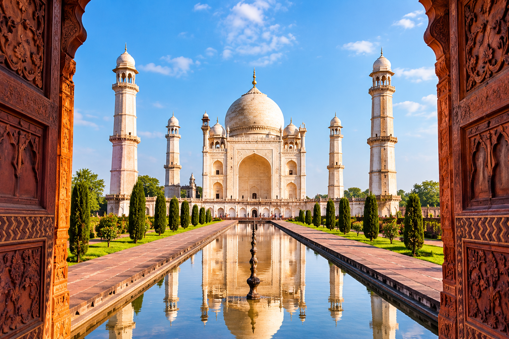

Bibi Ka Maqbara
⭐ Speciality: Deccan's famous Mughal-era mausoleum popularly known as the “Mini Taj of the Deccan.”
About the Heritage Site
Bibi Ka Maqbara is a 17th-century Mughal mausoleum in Chhatrapati Sambhajinagar, built in memory of Dilras Banu Begum, the wife of Aurangzeb. Its Mughal architecture, gardens and historical significance make it an important part of the heritage of the Deccan.
Best Time to Visit
October to March is the best time to visit Bibi Ka Maqbara. Morning or late afternoon is especially suitable for exploring the monument and its gardens.
Historical Importance
Bibi Ka Maqbara is a 17th-century Mughal mausoleum built in memory of Dilras Banu Begum, the wife of Aurangzeb. It is an important example of Mughal architecture in the Deccan and is protected as a heritage monument.
Relation to Indian Heritage
Bibi Ka Maqbara reflects India's rich Mughal and Deccan heritage through its dome, minarets, gardens and decorative architectural design. It represents an important part of Maharashtra's historical and cultural heritage.
The Historical Record
Bibi Ka Maqbara is a 17th-century Mughal mausoleum built in memory of Dilras Banu Begum, the wife of Aurangzeb. The monument reflects Mughal architectural influence in the Deccan and is known for its dome, minarets, gardens and decorative design. Its appearance has earned it the popular nickname “Mini Taj of the Deccan.”
Look closely at the dome, minarets and gardens to see how Mughal architectural ideas were adapted to the Deccan.
Mythology & Belief
Bibi Ka Maqbara is not primarily associated with a major mythological tradition. Its significance comes mainly from its Mughal history, architecture and cultural heritage. The monument is remembered as a mausoleum built in memory of Dilras Banu Begum and as an important part of the Deccan's historical landscape.
Bibi Ka Maqbara is primarily a historical and architectural heritage site rather than a mythological one. Its cultural significance comes from its Mughal history and its place within the heritage of the Deccan.
Different Cultural Views
Historical View
Learn about Bibi Ka Maqbara as a 17th-century Mughal monument in the Deccan, built in memory of Dilras Banu Begum.
Traditional View
Discover the cultural memory and traditions connected with this Mughal-era monument and the Deccan region.
Local View
Bibi Ka Maqbara is part of Chhatrapati Sambhajinagar's historic identity and reflects the city's Mughal and Deccan heritage.
Tourist View
Discover the elegant architecture, peaceful gardens and Taj Mahal-like appearance that make Bibi Ka Maqbara memorable for visitors.
Fun Facts
Mini Taj of the Deccan
Bibi Ka Maqbara is popularly known as the “Mini Taj of the Deccan” because of its visual resemblance to the Taj Mahal.
Mughal Garden
The monument is surrounded by gardens that form an important part of its Mughal architectural character.
Mughal Architecture
Its dome, minarets and decorative elements reflect Mughal architectural influence in the Deccan.
A Memorial
The monument was built in memory of Dilras Banu Begum, the wife of Aurangzeb.
The Experience
Bibi Ka Maqbara offers a peaceful and elegant heritage experience. Its grand architecture, gardens and Mughal design create a memorable atmosphere for visitors exploring the history of the Deccan.
Latest Photos


Location
Bibi Ka Maqbara
Chhatrapati Sambhajinagar, Maharashtra